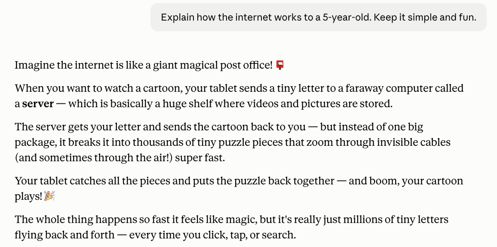
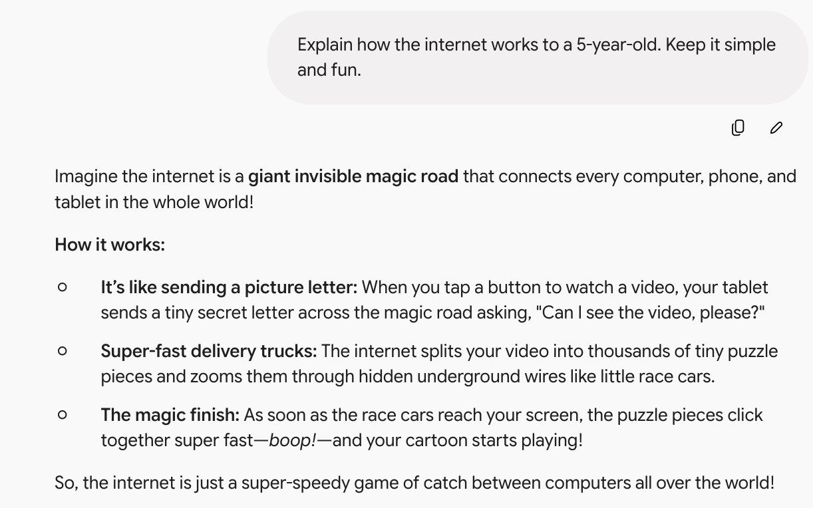
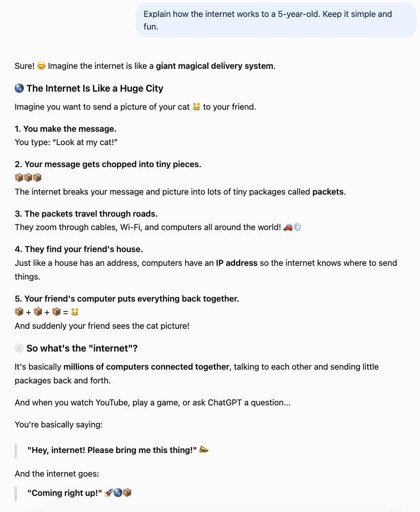

Same prompt, same child-sized brief. One kept it simple, one taught the most, and one slipped in words a 5-year-old has never heard.
"Explain like I'm 5" is one of the most useful things you can ask an AI — and one of the hardest for it to do well. Real simplicity means resisting the urge to sound smart. So I gave ChatGPT, Claude, and Gemini the same deceptively tricky prompt and watched who could actually talk to a child.
All three reached for the same core metaphor — sending something through an invisible system, broken into little pieces that get reassembled. That convergence is interesting on its own. But how far each one stayed in a 5-year-old's world varied a lot.
Claude picked a single image — a giant magical post office — and never let go of it.

Your tablet sends a tiny letter to a faraway computer called a server ("a huge shelf where videos are stored"). The server breaks the cartoon into "thousands of tiny puzzle pieces that zoom through invisible cables," your tablet catches them and puts the puzzle back together, "and boom, your cartoon plays." It introduced exactly one real word — server — and immediately made it concrete.
This is the most 5-year-old answer of the three. It is short, it flows like a little story, and a child could actually follow it start to finish without an adult stopping to explain a term. Nothing here needs a footnote.
Gemini went with a "giant invisible magic road" and organized the answer into three bolded beats: a picture letter, super-fast delivery trucks, and the magic finish.

It is clean, vivid, and easy to read aloud. The "little race cars" carrying puzzle pieces through underground wires is a nice touch. But the bolded-header structure reads a little more like a well-designed explainer than a bedtime story — closer to a bright 7- or 8-year-old than a 5-year-old. Still excellent, just pitched slightly higher.
ChatGPT gave by far the longest, most thorough answer: a five-step walkthrough with a cat picture traveling to a friend, complete with emoji at every step.

It was genuinely charming and the most fun to read. But here is where the "5-year-old" constraint got tested: ChatGPT introduced two real technical terms — "packets" and "IP address" — and even defined IP address as how "the internet knows where to send things." That is accurate and educational. It is also well over the head of an actual five-year-old.
This is the recurring ChatGPT pattern: it optimizes for completeness. It taught the most real information of the three. Whether that is a feature or a miss depends entirely on who is really reading — a curious parent, or an actual kindergartner.
If you have read my other head-to-heads, this will sound familiar. Claude compresses — one metaphor, minimum jargon, story-shaped. ChatGPT covers — five steps, real terminology, maximum information. Gemini sits in the middle — structured, clear, a notch more formal.
What makes this prompt a useful test is that the "best" answer flips depending on the literal instruction. The prompt said 5-year-old. By that standard, Claude wins on fidelity — it is the only one a five-year-old could follow unaided. But if you read the prompt as "explain simply to anyone," ChatGPT taught the most and Gemini was the most scannable.
Claude when you want true simplicity — explaining something to an actual child, or to yourself when a topic is brand new and you want zero jargon. It resists the urge to show off.
ChatGPT when "simple" really means "accessible but complete" — you want the easy version and the real vocabulary, like packets and IP addresses, so you actually learn the concept.
Gemini when you want a clean, structured explainer you can skim — the bolded beats make it the easiest to reference later.
Asked to explain the internet to a 5-year-old, Claude stayed truest to the brief with one simple metaphor and almost no jargon, ChatGPT taught the most but slipped in real terms like "IP address," and Gemini landed a clean middle. The lesson that keeps repeating across these tests: Claude simplifies, ChatGPT completes, and the right pick depends on whether you literally meant "a five-year-old" or "explain it simply."